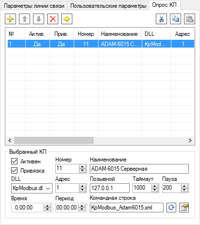

Рис. 1. Параметры линии связи
Взаимодействие с физическими или мнимыми устройствами выполняется программой Коммуникатор, которая, выступая в качестве ведущего (Master) или ведомого (Slave), производит опрос данных и передачу команд устройствам. Все устройства привязываются к своим линиям связи, которые не зависят друг от друга и опрашиваются параллельно.
На рис. 1 показан пример настройки линии связи. Канал связи определяет, с помощью какого физического интерфейса или сетевого протокола производится обмен данными с устройствами. Поддерживаются следующие каналы связи: Последовательный порт, TCP-клиент, TCP-сервер, UDP. В некоторых случаях, если взаимодействие с устройствами реализовано в библиотеке КП, канал связи следует оставить незаданным (например, в реализации OPC).
Если требуется отправлять команды управления устройствам, нужно поставить галочку Команды ТУ разрешены. По умолчанию она отключена в целях безопасности.
Порядок и параметры опроса КП на линии связи задаются на странице Опрос КП (рис. 2).
Рис. 1. Параметры линии связи

Рис. 2. Опрос КП
При снятии флажка Активна соответствующая линия связи будет полностью отключена со всеми относящимися к ней КП. При снятии флажка Активен для КП опрос и отправка команды соответствующему КП на линии связи будут отключены.
С помощью флажков Привязка можно включить или отключить для определённых КП или для всей линии связи отправку данных программе Сервер. Снятие флажка Использовать SCADA-Сервер на странице Общие параметры полностью отключает взаимодействие Коммуникатора и Сервера. Эти возможности удобно использовать при тестировании новых подключаемых к системе устройств.
Если в свойствах КП поля Время и Период нулевые, то опрос КП производится непрерывно циклически. Если для КП указано время, а период равен нулю, то опрос выполняется один раз в сутки в указанное время. Если период не нулевой, то КП опрашивается периодически, начиная с заданного времени. Поля Таймаут и Пауза определяют длительность ожидания ответа от устройства и задержку после приёма данных. Поле Командная строка позволяет задать дополнительные параметры работы КП, которые определяются библиотекой КП и указаны в её описании.
Кнопка  позволяет восстановить параметры опроса КП по умолчанию, которые заложены в DLL, выбранной из списка. Если данная DLL поддерживает отображение свойств конкретного КП, то они открываются кнопкой
позволяет восстановить параметры опроса КП по умолчанию, которые заложены в DLL, выбранной из списка. Если данная DLL поддерживает отображение свойств конкретного КП, то они открываются кнопкой  или из контекстного меню элемента дерева, соответствующего КП. Для некоторых типов КП задаются общие глобальные свойства, в этом случае они редактируются по кнопке Свойства на странице Библиотеки КП.
или из контекстного меню элемента дерева, соответствующего КП. Для некоторых типов КП задаются общие глобальные свойства, в этом случае они редактируются по кнопке Свойства на странице Библиотеки КП.
Значительно ускорить настройку обмена данными с устройствами позволяет функция импорта (рис. 3). Чтобы ей воспользоваться, галочка Использовать SCADA-Сервер на странице Общие параметры должна быть установлена, а служба Сервера должен быть запущена. Импорт вызывается кнопкой  , которая расположена в контекстном меню элементов линий связи, а также на странице Опрос КП. Функция импорта позволяет в настройках программы Коммуникатор создать перечень линий связи и КП на основе информации из базы конфигурации.
, которая расположена в контекстном меню элементов линий связи, а также на странице Опрос КП. Функция импорта позволяет в настройках программы Коммуникатор создать перечень линий связи и КП на основе информации из базы конфигурации.
Кнопка  позволяет обновить настройки существующих линий связи и КП по базе конфигурации, однако при этом будут утеряны настройки, сделанные пользователем вручную.
позволяет обновить настройки существующих линий связи и КП по базе конфигурации, однако при этом будут утеряны настройки, сделанные пользователем вручную.

Рис. 3. Импорт КП